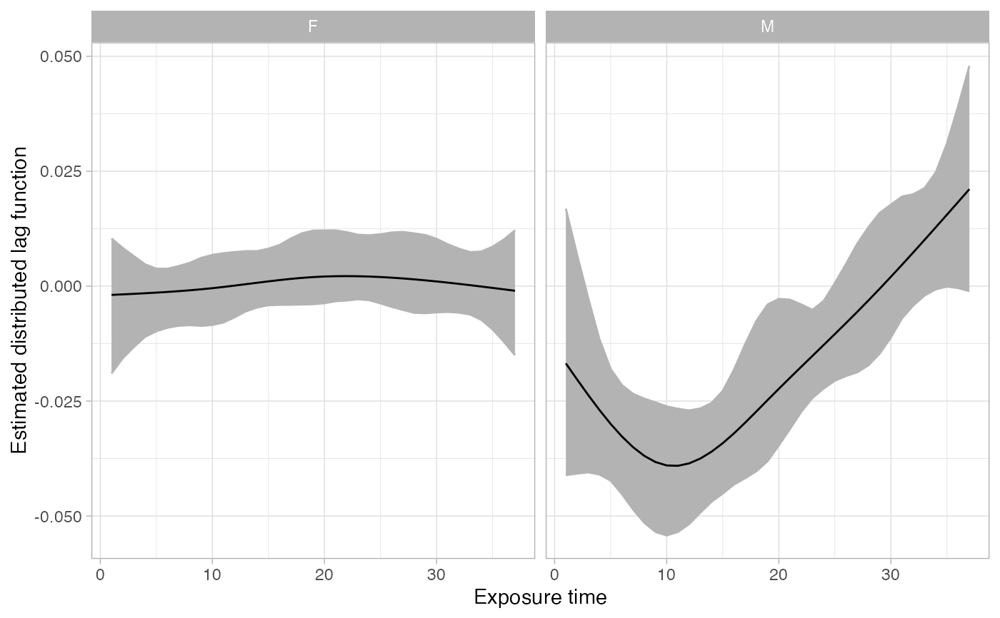
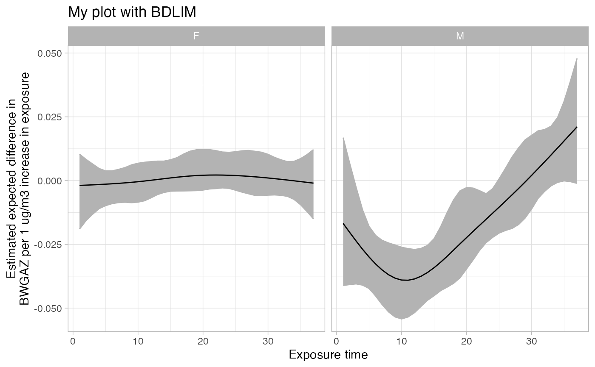

Plot for Summary pf BDLIM
Usage
# S3 method for summary.bdlim4
plot(x, ...)Examples
# run BDLIM with modification by ChildSex
fit_sex <- bdlim4(
y = simulated_birth_data_c1$bwgaz,
exposure = simulated_birth_data_c1[,paste0("pm25_",1:37)],
covars = simulated_birth_data_c1[,c("MomPriorBMI","MomAge","race","Hispanic",
"EstMonthConcept","EstYearConcept")],
group = as.factor(simulated_birth_data_c1$ChildSex),
df = 5,
nits = 5000,
parallel = FALSE
)
#> fitting bw
#> fitting b
#> fitting w
#> fitting n
#> postprocessingpostprocessing
# show model comparison results
fit_sex
#>
#> Call:
#> bdlim4(y = simulated_birth_data_c1$bwgaz, exposure = simulated_birth_data_c1[,
#> paste0("pm25_", 1:37)], covars = simulated_birth_data_c1[,
#> c("MomPriorBMI", "MomAge", "race", "Hispanic", "EstMonthConcept",
#> "EstYearConcept")], group = as.factor(simulated_birth_data_c1$ChildSex),
#> df = 5, nits = 5000, parallel = FALSE)
#>
#> Modification pattern probabilities (higher is better fit):
#> *bw* b w n
#> 0.6108 0.3884 0.0008 0.0000
#>
#> Modification pattern WAIC (lower is better fit):
#> *bw* b w n
#> 1 1697.978 1700.382 1728.177 1735.471
#>
#> Note: Model probabilities tend to favor more complex models compared to WAIC. It is recomended to use model probabilities for selecting the modification pattern and WAIC to compare degrees of freedom for the weight function.
#summarize results
sfit_sex <- summary(fit_sex)
# graph the estimated distributed lag functions for each group
plot(sfit_sex)

# can save plot as an object and modify with ggplot2
library(ggplot2)
plt <- plot(sfit_sex)
plt + ggtitle("My plot with BDLIM") +
ylab("Estimated expected difference in\nBWGAZ per 1 ug/m3 increase in exposure")

# the summary file has the data to make this plot
head(sfit_sex$dlfun)
#> group time mean median sd q2.5 q97.5
#> 1 F 1 -0.001904727 -0.0005922279 0.006995025 -0.019001288 0.010358512
#> 2 F 2 -0.001788809 -0.0005358621 0.005797552 -0.015681428 0.008319265
#> 3 F 3 -0.001669374 -0.0005913769 0.004720695 -0.013231397 0.006525427
#> 4 F 4 -0.001542903 -0.0005855131 0.003844487 -0.011011819 0.004746858
#> 5 F 5 -0.001405879 -0.0005685814 0.003260247 -0.009819644 0.003803600
#> 6 F 6 -0.001254783 -0.0005265108 0.003020326 -0.009037037 0.003793014
#> pr_gr0
#> 1 0.4256
#> 2 0.4108
#> 3 0.3828
#> 4 0.3668
#> 5 0.3488
#> 6 0.3528